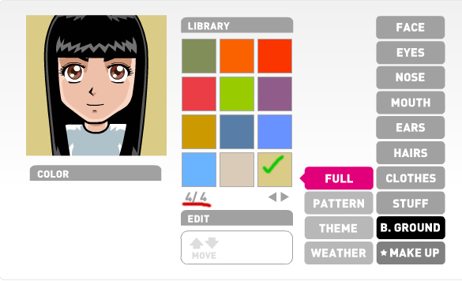
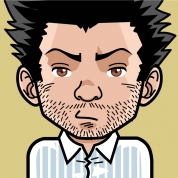

Sveiki, kaip jau rašiau anksčiau, turint laiko sugeneruoti bent po vieną "žmogaus atvaizdą" www.faceyourmanga.com svetainėje. Žemiau pateikiu pavz į ką reiktų atkreipti dėmesį generuojant žmogeliuką:

T.y. paveikslėlio fonas turi būti nurodytos spalvos, šviesiai ruda. Paveikslėlyje pavaizduota.
Galutinio rezultato pavyzdys:

Pastaba: generuoti galite tiek vyrus, tiek moteris!
Iš anksto ačiū.